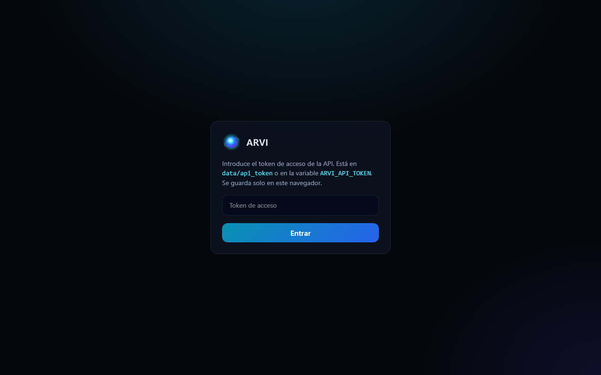

15. Aplicaciones de escritorio (PWA y Tauri) y acceso móvil¶
15.1 Decisión: PWA primero, Tauri después¶
El plan original preveía una aplicación de escritorio con Tauri 2 (Fase 4b) y una PWA para el móvil (Fase 8). Al empezar la Fase 4b se comprobó que el equipo no tiene el compilador de C++ de Microsoft (Visual Studio Build Tools y Windows SDK), que Tauri necesita en Windows. Rust 1.99, Node 24 y WebView2 sí estaban instalados.
Instalarlo supone descargar unos 2-3 GB, más unos 400 MB de paquetes de Rust. Una descarga parecida ya cortó durante minuto y medio otro servicio web que el alumno publica desde este equipo (INC-011). El alumno decidió adelantar la PWA y dejar Tauri para más tarde (ADR-011). Ese mismo día autorizó la descarga; las Build Tools se instalaron en unos 4 minutos, con un monitor que revisaba el túnel del otro servicio cada minuto (0 avisos), y se hizo también Tauri (apartado 15.4). Comparación:
| Necesidad | PWA | Tauri |
|---|---|---|
| Ventana propia, sin barra del navegador | Sí (display: standalone) |
Sí |
| Icono en el escritorio, Inicio y barra de tareas | Sí (Edge o Chrome → «Instalar aplicación») | Sí |
| Mismo código de interfaz | Sí | Sí |
| Arrancar el backend automáticamente | No | Sí (comprobado, P-035) |
| Icono en la bandeja del sistema | No | Sí |
| Tamaño | 0 (usa el navegador) | 3,1 MB el ejecutable; instalador de 1,2 MB |
| Funcionar en el móvil | Sí (con HTTPS, apartado 15.4) | No |
15.2 Implementación¶
| Archivo | Función |
|---|---|
frontend/public/manifest.webmanifest |
Nombre, colores, display: standalone, iconos 192/512 y maskable |
frontend/public/sw.js |
Service worker mínimo |
frontend/public/offline.html |
Página que se muestra si el backend no está en marcha |
scripts/frontend/generar_iconos.py |
Genera los PNG a partir del logotipo SVG con Chromium (reproducible) |
backend/arvi/api/main.py |
Tipo MIME del manifiesto y Cache-Control: no-cache para /, sw.js, el manifiesto y el HTML |
El service worker es mínimo a propósito. ARVI es una aplicación local: el mismo backend sirve la interfaz y responde al chat, así que «funcionar sin conexión» no tiene sentido. El service worker solo hace dos cosas:
- Hace la aplicación instalable.
- Si el backend no responde, muestra una página que explica qué pasa, en lugar del error genérico del navegador.
Nunca intercepta /api, /ws ni peticiones que no sean GET. Así no puede mostrar datos antiguos
de la caché ni guardar respuestas con información personal.
%% figura: Decisiones del service worker de ARVI para cada petición
flowchart TD
A[Petición del navegador] --> B{¿GET y mismo origen?}
B -- No --> R[Red directa]
B -- Sí --> C{¿/api o /ws?}
C -- Sí --> R
C -- No --> D{¿Navegación?}
D -- Sí --> E[Red primero]
E -- Responde --> F[Página real y refresco en segundo plano de offline.html]
E -- Falla --> G[offline.html desde la caché]
D -- No --> REl registro solo se hace en la compilación de producción (import.meta.env.PROD), para no interferir
con la recarga en caliente de Vite durante el desarrollo.
15.3 Pruebas¶
La prueba scripts/e2e/pwa.py usa Chromium con un perfil persistente y dos fases:
| Fase | Comprobación | Resultado (2026-11-12) |
|---|---|---|
| Con servidor | Manifiesto application/manifest+json; sw.js y HTML con no-cache |
Correcto |
| Con servidor | Service worker activo con ámbito / |
Correcto |
| Con servidor | Errores de instalabilidad que devuelve Chromium (Page.getInstallabilityErrors) |
Ninguno (instalable) |
| Con servidor | Errores del manifiesto y de la consola | Ninguno |
| Sin servidor (detenido de verdad, sin nada escuchando en el puerto 8765) | La navegación muestra «ARVI · sin conexión» | Correcto |
| Sin servidor | La página servida es la versión actual, no una copia antigua (INC-018) | Correcto |


Instalar ARVI en Windows: con el backend en marcha, abrir http://127.0.0.1:8765 en Edge o
Chrome y elegir Instalar ARVI (icono de la barra de direcciones o menú → Aplicaciones).
[PENDIENTE] Captura de la aplicación instalada en el equipo del alumno: la prueba automática usa un
navegador sin interfaz, que no muestra la ventana de instalación.
15.4 Aplicación de escritorio con Tauri 2¶
frontend/src-tauri/ (Rust, Tauri 2.12) contiene un envoltorio fino: una ventana nativa con
WebView2 que carga la misma interfaz que sirve el backend (http://127.0.0.1:8765). No duplica
ninguna lógica y añade lo que una PWA no puede hacer:
| Función | Cómo |
|---|---|
| Arranca el backend si no está en marcha | Comprueba el puerto 8765; si nadie escucha, lanza uv run --no-sync arvi-server sin consola y espera hasta 45 s |
| Lo detiene al salir, solo si lo arrancó ella | taskkill /T sobre el árbol de procesos (uv lanza Python como hijo) |
| Icono en la bandeja | Clic izquierdo: mostrar. Menú: «Mostrar ARVI» y «Salir de ARVI» |
| Cerrar oculta | La ventana se oculta en la bandeja y ARVI sigue disponible |
| Instancia única | Plugin oficial single-instance: abrir ARVI otra vez muestra la ventana existente |
Seguridad. La ventana carga una URL externa (aunque sea local) y no se le concede ninguna
capability, así que la página no puede usar las API nativas de Tauri (archivos, procesos…). El
backend sigue siendo el único que decide qué se ejecuta. La ruta del repositorio se fija al compilar
y se puede cambiar con la variable ARVI_REPO.
Compilación: npm run desktop:build en frontend/. La primera compilación tardó 2 min 41 s. El
resultado es arvi-desktop.exe (3,1 MB) y el instalador NSIS ARVI_0.1.0_x64-setup.exe (1,2 MB).
Pruebas (scripts/e2e/tauri_escritorio.ps1, REAL):
| Caso | Resultado (2026-11-12) |
|---|---|
| Backend ya en marcha (P-034) | Ventana en 0,3 s; no se arranca otro backend; único hijo msedgewebview2.exe; 23 MB de RAM |
| Cerrar la ventana (P-034) | Se oculta y el proceso sigue vivo |
| Abrir ARVI otra vez (P-034) | La segunda instancia termina y reaparece la ventana original (1 instancia) |
| Backend detenido (P-035) | La aplicación lanza uv, el backend responde y la ventana aparece en 2,8 s |
Las capturas se hacen con PrintWindow sobre la ventana de ARVI (scripts/e2e/capturar_ventana.ps1),
así que en la imagen no puede aparecer ninguna otra ventana del escritorio.

[PENDIENTE] Comprobar a mano «Salir de ARVI» desde la bandeja: la prueba automática no puede pulsar el menú de la bandeja, así que cierra el proceso a la fuerza y limpia el backend ella misma.
15.5 Acceso desde el móvil¶
Un navegador solo permite instalar una PWA y usar el micrófono en un contexto seguro: HTTPS, o
127.0.0.1/localhost en el propio equipo. Por eso, en el móvil hace falta HTTPS. El diseño previsto:
- Tailscale Serve publica ARVI con HTTPS y un certificado válido solo dentro de la red privada
del alumno (tailnet), no en Internet. El backend sigue escuchando en
127.0.0.1(capítulo 17:ARVI_ALLOW_REMOTEno hace falta, porque Tailscale hace de proxy local). - El token de ARVI sigue siendo obligatorio como segunda capa.
- Pulsar para hablar como experiencia principal.
Los navegadores móviles no permiten mantener el micrófono abierto en segundo plano ni con la pantalla bloqueada, así que la PWA no ofrecerá escucha permanente en el móvil.
15.6 Estado¶
| Elemento | Estado |
|---|---|
| PWA instalable en el escritorio | Hecho (P-029, P-030) |
| Aplicación Tauri e instalador | Hecho (P-034, P-035) |
| Tailscale | Instalado (1.104.6) y Tailscale Serve activo: https://servidor.<tailnet>.ts.net → 127.0.0.1:8765, solo dentro de la tailnet (nunca funnel). Comprobado en la auditoría final (P-057): salud por HTTPS y 401 sin token. [PENDIENTE] Instalar la PWA en el teléfono del alumno |
| Pruebas desde el móvil | [PENDIENTE] Dependen del paso anterior |